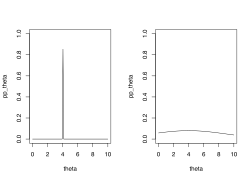

4 Parameter estimation of statistical models
Lecture notes
Consider a generative model, with parameters \(\theta\), for how some data \(D\). We would like to test if \(\theta\) are good parameters or if some other parameters are better. Given the model, we can compute \[Pr[D| \theta],\] i.e., the probability that the model with parameters \(\theta\) generates \(D\).
However, we would be more interested in how good the model with parameters \(\theta\) for our data. In other words, what we would actually like to compute is \[Pr[\theta|D].\] This would allow us to select optimal parameter estimates and, importantly, to evaluate how good they are compared to other parameters.
Getting from \(Pr[D| \theta]\) to \(Pr[\theta|D]\) can be solved in different ways, which has given rise to two major philosofical branches of statistics:
- Bayesian statistics and
- Frequentist statistics
4.1 Bayesian approach
Lecture notes
Bayes’ theorem (Thomas Bayes, 1702-1761) provides a way to obtain the requested \(P[\theta|X,Y]\)
\[Pr[\theta|D] = \frac{Pr[D| \theta]Pr[\theta]}{Pr[D]}\] Posterior probability
\(Pr[\theta|D],\) the probability, computed posterior to analysis, of the parameters \(\theta\) conditioned on the observed data, i.e, our requested probability.
An important characteristic of Bayesian statistics is that the focus is not on point estimates, but on the posterior probability distribution over the parameter space of \(\theta\), which provides a measure of uncertainty (probabilities) in comparison to other values.

Prior probability of \(\theta\)
\(Pr[\theta]\) is the prior probability of \(\theta\) and should according to Bayesian statistics reflect what we know (or believe to know) about how close \(\theta\) is to the true parameters. We can use information from previous studies or we can assign a uninformative prior, e.g., \(Pr[\theta]\) follows a uniform distribution for all \(\theta\) in the interval \([a,b]\).
It can be shown that the effect of the prior on the posterior probsbiity is largest when the observed data is small. With larger sample sizes, the posterior probability will eventually just depend on \(Pr[D|\theta]\).
Marginal Probability of \(D\)
\(Pr[D]=\int_{\theta}Pr[D| \theta]Pr[\theta]\) is the probability of \(D\) regardless of \(\theta\). This can often be difficult difficult to calculate and, for this reason, Bayesian models are often designed so that this can be calculated analystically or some approximation approach, such as Markov chain Monte Carlo (MCMC) is used.
Extra reading
Probabilistic algebra
A conditional probability \(Pr[A|B]\) is the probability that \(A\) happens if we know that \(B\) has happened. To obtain the probability that both \(A\) and \(B\) happens we need to first take the probability that \(B\) happens and then multiply it with the conditional probability that \(A\) hapens given \(B\), i.e.,:
\[Pr[A,B] = Pr[A|B] Pr[B].\]
From this follows the reverse operation
\[\frac{Pr[A,B]}{Pr[B]} = Pr{A|B}\] Notice that this also works if we have more than one condition: \(Pr[A|B,C] * Pr[B] = Pr[A,B|C].\)
What happens in Bayes rule is that we first, in the numerator, perform \(Pr[B|A]*Pr[A] = Pr[A,B]\) and then divide this with the denominator \(\frac{Pr[A,B]}{Pr[B]} = Pr[A|B]\).
4.2 Likelihood – The frequentist approach
Lecture notes
Likelihood (Introduced by Fisher, 1925, formalized by Edwards, 1972) builds on the intuition that if \(\theta\) is close to the ‘truth’, then \(Pr[Y| X, \theta]\) will be higher than for wrong \(\theta\). We should therefore select the \(\theta\) that maximizes \(Pr[Y| X, \theta]\); this is called maximum likelihood estimation (MLE) of \(\theta\).
Since statistical model contain an element of randomness, the reasoning above might not always be correct for any single obeservation. However, if we sum over a large number of observations it will be true on average. Hence the need for datasets that are large enough.
To formalize this intuition, Edwards (1972) defined the likelihood of model parameters being true given observed data as
\[L[\theta|D] \propto Pr[D| \theta]\]
Extra Reading
Notice that this notation is not uncommonly mixed up, so you might also see the notation \(L[Y|X,\theta]\) for the likelihood.
Similarly \(\propto Pr[Y|X, \theta]\) is often referred to as the likelihood function.
The proportionality (indicated by ‘\(\propto\)’) means there are some unknown constant factor, \(k\), such that \(L[\theta|Y,X] = k Pr[Y|X, \theta]\). However, the factor \(k\) is assumed to be constant over \(\theta\)s and over models.
Using a Bayesian perspective, we can see that the proportionality constant \(k = \frac{Pr[\theta]}{Pr[D]}\), and that Likelihood would correspond to assuming a uniform prior over all possible values of \(\theta\).
In practice, the proportionality is ignored and we set
\[L[\theta|Y,X] = Pr[Y|X, \theta]\]
Extra Reading
When the likelihood of two \(\theta\)s (or models) are compared this is almost always done as a likelihood ratio,
\[\frac{L[\theta_1|Y,X]}{L[\theta_0|Y,X]} = \frac{k Pr[Y|X, \theta_1]}{ k Pr[Y|X, \theta_0]} =\frac{Pr[Y|X, \theta_1]}{ Pr[Y|X, \theta_0]}\]
which means that the factor \(k\) disappears. Hence the factor \(k\) is always ignored. Likelihood ratios is the basis of most model comparison statistics, e.g., the Wald test, the Score test, regularization…
In maximum likelihood estimation of some parameters \(\theta\), one simply selects the estimates \(\widehat\theta\) that gives the highest likelihood, \(max_{\theta}L[\theta|X,Y] = L[\widehat\theta|X,Y]\). In many applications of likelihood and maximum likelihood, it is practical to instead use the logarithm of the likelihood, the logLikelihood, \(\log L[\theta_1|Y,X]\).
Extra Reading
As mentioned above, the logarithm of the likelihood, the logLikelihood, \(\log L[\theta_1|Y,X]\), or sometimes the negative logLikelihood, \(-\log L[\theta_1|Y,X]\), is often used. Notice, that
- The \(\theta\) estimates that maximizes \(\log L[\theta|Y,X]\) also maximizes \(L[\theta|Y,X]\)
- The \(\theta\) estimates that minimizes \(-\log L[\theta|Y,X]\) maximizes \(L[\theta|Y,X]\)
- A likelihood ratio corresponds to a logLikelihood difference, \[\log\left(\frac{L[\theta_1|Y,X]}{L[\theta_0|Y,X]}\right) = \frac{\log L[\theta_1|Y,X]}{\log L[\theta_0|Y,X]} = \log L[\theta_1|Y,X] - \log L[\theta_0|Y,X]\].
Likelihood and maximum likelihood estimation are central concepts in frequentist statistics. Many statistical tests and methods uses or is based on the concept of maximum likelihood.
In general, full-on likelihood computation and maximum likelihood estimation is relatively slow, so alternative and faster methods has been developed. One example is the use ordinary least squares OLS for linear models; it can be shown that the likelihood can be expressed as a function of the residual sum of squares (RSS) and that maximum likelihood estimates of \(\beta\) is exactly the same as those of the OLS (which minimizes RSS.
NB! This is a special case for linear models and are not generally true for other models. For example, logistic regression is typically fitted using maximizing the likelihood
Extra Reading
Linear models is a special case with some nice properties when it comes to likelihood. Consider a simple linear regression model,
\[ y = \beta x + \epsilon, \]
where the residuals \(\epsilon\sim N(0,\sigma^2)\).
It turns out that the likelihood estimates of both \(\beta\) and \(\sigma^2\) are functions of the RSS of the residuals, so that the likelihood can be approximated by
\[ \log L[\beta, \sigma^2|Y,X] \approx -\frac{N}{2} \log RSS\]
The likelihood for given \(\beta\) and \(\sigma^2\), given observed data \(Y\) and \(X\) is given by
\[ L[\beta, \sigma^2|Y,X] = \prod_i pdf_{Normal}(y_i, \mu=\beta x_i, \sigma^2=\sigma^2) = \prod_i \frac{1}{\sqrt{2\pi \sigma^2}}e^{-\frac{(y_i-\beta x_i)^2}{2\sigma^"}} \]
where \(pdf_{Normal}\) denotes the probability distribution function for the Normal distribution. If we work with the logLIkelihood instead, we get
\[\begin{eqnarray*} \log L[\beta, \sigma^2|Y,X] &=& \sum_{i=1}^N \log\left(\frac{1}{\sqrt{2\pi \sigma^2}}e^{-\frac{(y_i-\beta x_i)^2}{2\sigma^2}}\right)\\ &=& \sum_{i=1}^N \log \left(\frac{1}{\sqrt{2\pi \sigma^2}}\right) -\frac{(y_i-\beta x_i)^2}{2\sigma^2} \\ &=& N\log \left(2\pi \sigma^2\right)^{-1/2} -\frac{\sum_{i=1}^N (y_i-\beta x_i)^2}{2\sigma^2} \\ &=& -\frac{N}{2}\log \left(2\pi \sigma^2\right) -\frac{RSS}{2\sigma^2} \end{eqnarray*}\]
We see here that minimizing \(RSS\) (as in OLS) will maximize the logLikelihood, regardless of the value of \(\sigma^2\). Moreover, it turns out that also \(\sigma^2\) can be estimated fairly well by \(RSS/N\). Hence, we get
\[\begin{eqnarray*} \log L[\beta, \sigma^2|Y,X] &=& -\frac{N}{2}\log \left(\frac{2\pi RSS}{N}\right) -\frac{N}{2}\frac{RSS}{RSS}\\ &=& -\frac{N}{2}\log RSS + \frac{N}{2}\log \frac{2\pi}{N} -\frac{N}{2}\\ &=& -\frac{N}{2}\log RSS + C \end{eqnarray*}\] where \(C=\frac{N}{2}\left(\log \frac{2\pi}{N} -1\right)\) is a constant that is usually ignored (in likelihood ratios, which is equivalent to log likelihoods differences, it will disappear).
4.3 Bayesians vs frequentists
Lecture notes
There is often described a severe controversy between Bayesians and frequentists. However, this controversy represents the extreme hardcore Bayesians and frequentists.
In reality, there is a large gray-zone where frequentists and Bayesians meet and socialize:
- Bayesian models can be viewed as a type of the hierarchical models often used by frequentists
- Frequentist bootstrap analysis is often used to estimate uncertainty of point estimates in relation to alternatives, as is done in Bayesian statistics
- The Bayes factor is a Bayesian version of the likelihood ratio
- Bayesian posterior intervals corresponds to frequentist confidence intervals (Note however, that there are no Bayesian significance test)
- etc.
Most practical statisticians use the tool that is adequate for the problem at hand, whether it is Bayesian or frequentist.